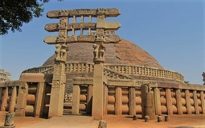

THE MAURYAN EMPIRE
(c. 324–185 BCE)
The Mauryan period is a remarkable period in the early history
of Indian subcontinent. It not only marks the establishment of
the
first subcontinental empire, but also the development of
innovative and comparatively stable governance strategies.
Leaving Kerala, Tamil Nadu, and some parts of north-eastern
India, the Mauryas ruled over the whole of the sub-continent.
Major Literary Sources
-
Arthashashtra of Kautliya (Chanakya or Vishnugupta):
Written in Sanskrit by Prime Minister of Chandragupta Maurya,
it is a treatise on state craft and public administration
under Mauryas.
-
Indica of Megasthenese: sheds light on the
Socioeconomic and administrative structure under Mauryas;
India free from slavery; 7-castes system and usuary in India.
-
Vishakha Datta’s Mudra-rakshasa: It describes how
Chandragupta Maurya got Chanakya’s assistance to overthrow the
Nandas. Besides this, it gives an excellent account of the
prevailing socio-economic conditions.
-
Dipavamsa and Mahavamsa (Sri Lankan chronicles):
Ashoka’s role in spreading of Buddhism in Sri Lanka.
The Mauryan Dynasty
Chandragupta Maurya (324/321 – 297 BCE)
-
With the help of his mentor Chanakya/Kautilya,
Chandragupta Maurya dethroned the last Nanda ruler Dhanananda
and founded the Mauryan dynasty with its capital at
Pataliputra.
-
He was called Sandrocottus by the Greek scholars. Greek
sources account for the conflict between Chandragupta Maurya
and Seleucus Nikator (who was one of the generals of
Alexander, and after his death, succeeded in gaining control
over most of the eastern Asiatic provinces). Chandragupta
defeated him around 301 BCE and Seleucus was compelled to
yield north-west parts of Indian sub-continent to him in
return for 500 elephants.
-
Seleucus sent an ambassador to the Mauryan court,
Megasthenes (who wrote the Indica).
-
According to Jain texts and tradition, Chandragupta adopted
Jainism and went to the hills of Shravana Belagola (near
Mysore) with
Bhadrabahu and committed Sallekhana (death by slow
starvation).
Bindusara (297 – 273 BCE)
-
Greek writers address him as Amitrochates (destroyer of
foes).
-
He was credited with conquering ‘the land between the two
seas’, i.e., the Arabian sea and the Bay of Bengal.
- He patronised and joined the Ajivika sect.
Ashoka (268 – 232 BCE)
-
During the reign of Bindusara, Ashoka was appointed the
viceroy of Taxila and Ujjain. It is believed that, after
Bindusara's death, ashoka usurped the throne by having his
brothers killed.
-
He was regarded as one of the greatest kings of all times, and
probably was the first ruler to maintain direct contact with
his people through his inscriptions.
-
The various names of the emperor include
Buddhashakya and Ashoka (in the Maski Edict),
Dharmasoka (Sarnath inscription),
Devanampiya (meaning beloved of the gods), and
Piyadassi (meaning of pleasing appearance), given in
the Sri Lankan Buddhist chronicles Dipavamsa and Mahavamsa.
-
His empire covered the whole territory from Hindukush to
Bengal, and extended over Afghanistan, Baluchistan, and the
whole of India including Kashmir and the valleys of Nepal (the
first empire to do so), with the exception of a small area in
the far south (which, according to
rock edict 13, were inhabited by the Cholas and
Pandyas, and according to rock edict 2, by the
Keralaputras and Satiyaputras).
-
His conquest of Kalinga (262–261 BCE), proved to be the
pivotal event of his life. Although Ashoka won the war, the
deaths and destruction caused by the war, completely changed
him. After the annexation of Kalinga was completed, Ashoka
embraced the teachings of Buddhism, and renounced war and
violence. He sent out missionaries to travel around Asia and
spread Buddhism to other countries.
-
Buddhism for the first time went outside India during his
reign. He sent his son Mahendra and daughter Sanghamitra to
Ceylon (Sri Lanka).
-
He appointed Dharma Mahamattas to propagate dharma
among various social groups. Organized the third Buddhist
council at Pataliputra, after which he sent Buddhist
missionaries to Ceylon.
-
He banned animal sacrifice, regulated the slaughter of animals
for food, and established dharmashalas, hospitals throughout
his kingdom.
Later Rulers
-
The Maurya empire declined rapidly after Ashoka and the later
kings had very short reigns.
-
The empire became weak and fragmented, and the Mauryan dynasty
came to an end when the last king, Brihadratha, was
killed by his military commander, Pushyamitra Shunga,
in 185 BCE.
Ashoka’s Dhamma and Ashokan Inscriptions
Ashoka's Dhamma
-
Ashoka's Dhamma (prakrit word for Dharma) was not given any
formal definition or structure. It emphasized:
-
tolerance of people and the notion of showing consideration
towards slaves and servants;
- obedience to elders;
- generosity towards the needy, Brahmans and Sramanas.
-
Ashoka pleaded for tolerance of different religious sects in
an attempt to create a sense of harmony. The policy of Dhamma
also laid stress on non-violence, which was to be practiced by
giving up war and conquests and also as a restraint on the
killing of animals.
Ashokan Inscriptions
-
The history of Ashoka is reconstructed on the basis of his
inscriptions. These inscriptions throw light not only on the
reign of Ashoka, but also reveal his external and domestic
policies, his views about dhamma, and the extent of his
empire.
-
There are total 33 inscriptions and are primarily classified
into
Major Rock Edicts, Minor Rock Edicts,
Major Pillar Edicts, and Minor Pillar Edicts.
-
In his inscriptions, Brahmi, Kharosthi, Prakrit, Aramaic, and
Greek languages (deciphered by James Prinsep in c.1837 CE)
have been used.
-
Pillar edicts:
-
They were mostly inscribed on well-polished sandstone
monolithic pillars (quarried from the sites of
Chunar, near Varanasi).
-
Each pillar surmounted with a finely sculpted
bell capital (a stone carved in the shape of an
inverted lotus).
-
On top of bell capital is a platform (called abacus)
which is intended to support the crowned animal.
-
Two pillars, one from Topra and the other from Meerut, were
shifted to Delhi by Feroz Shah Tughlaq.
Fourteen Major Rock Edicts and Their Corresponding Messages:
| Edit |
Content |
| First Edict |
Declared prohibition of animal sacrifice |
| Second Edict |
Care for man and animals.
Mentions the Pandyas, Satyapuras and Keralaputras of
South India.
|
| Third Edict |
Mentions Pradeshikas, Rajukas, and Yuktas and their need
for going on tours of inspection every five years as
part of their other duties, preaching dhamma, and also
adopting liberal attitude towards Brahmanas and
Shramanas.
|
| Fourth Edict |
Dhammaghosha (sound of Dhamma/righteousness) over
Bherighosha
(sound of war).
|
| Fifth Edict |
About Dhammamahamatras. |
| Sixth Edict |
King’s desire to know about his people’s conditions.
|
| Seventh Edict |
Tolerance for all religions. |
| Eigth Edict |
Ashoka’s first visit to Bodh Gaya and the Bodhi tree
(his first Dhamma Yatra).
|
| Ninth Edict |
Condemns popular ceremonies. |
| Tenth Edict |
Disapproves of the individual’s desire for fame and
glory and stresses on Dhamma.
|
| Eleventh Edict |
Elaborates on Dhamma. |
| Twelth Edict |
Tolerance for all religions and sects. |
| Thirteenth Edict |
Mentions victory over Kalinga. Also
mentions Pandyas, Cholas, etc.
|
| Fourteenth Edict |
Explains the purpose of rock edicts |
Other Relevant Inscriptions and Important Edicts
-
Allahabad Edict:
-
Ashoka warns members of the Sangha against causing division
in the ranks.
-
Samudragupta’s inscription is on this edict itself.
Jahangir was probably responsible for its removal to the
fort at Allahabad (UP).
-
Girnar Rock Inscription of Rudradaman (Kathiawar):
Mentions the Sudarshan Lake constructed by Pushyagupta, a
rashtriya (provincial governor) of Saurashtra (Gujarat) during
Chandragupta Maurya’s reign.
-
Kalinga Edict: Mentions “All men are my children”
-
Saugaura Copper Plate Inscription: Inscription of
Chandragupta Maurya; mentions relief measures adopted during
famine in Magadha.
Mauryan Administration
-
The Mauryan government was a centralized bureaucracy of
which the nucleus was the king.
-
The Mantri Parishad: The king was assisted by Mantri
Parishad whose members included:
- The Yuvaraja (the crown prince)
- The Purohita (the chief priest)
-
The Senapati (the commander-in-chief) and other
ministers.
Administrative Units and Their Heads:
| Unit |
Head |
| Chakra (province) |
Rashtrapala/Kumara i.e., viceroys |
| Ahar (district) |
Pradeshika (administrative) and Rajuka (revenue) |
| Sangrahana (group of 10 villages) |
Gopa |
| Gram (village) |
Gramika |
| Town / City |
Nagaraka |
Provincial Administration
| Provinces |
Capital |
| Uttarapatha (North) |
Taxila |
| Avantipatha (West) |
Ujjain |
| Prachyapatha (East) |
Kalinga |
| Dakshinapatha (South) |
Suvarnagiri |
| Central Province |
Pataliputra |
Administrative Officers and their duties
| Administrative Officers |
Duties |
| Nagaraka |
The officer-in-charge of the city administration. |
| Sitaadhyaksha |
Supervised agriculture |
| Amatyas |
The Secretaries |
| Sannidhata |
Chief treasury officer. |
| Samaharta |
The collector general of revenue |
| Durgapala |
Governor of fort |
| Antapala |
Governor of the frontier. |
| Lipikaras |
Scribes |
| Prativedikas |
Reporters |
| Kumaras |
The viceroys in-charge of a province. |
| Pradesikas |
They were the modern-day district magistrates and
in-charge of district.
|
| Rajukas |
They were the later-day Patwaris. They were responsible
for surveying and assessing the land. In rural areas,
they were the judicial officers.
|
A vast espionage system collected intelligence for both internal
and external security purposes.
Army
-
The most striking feature of Mauryan administration was
maintenance of a huge army. They also maintained a Navy.
-
According to Megasthenes the administration of Army was
carried by a board of 30 officers divided into six committees,
each committee consisting of 5 members. They are:
- Infantry
- Cavalry
- Elephants
- Chariots
- Navy
- Transport
Having renounced offensive warfare and expansionism, Ashoka
nevertheless continued to maintain this large army, to protect
the Empire and instil stability and peace.
Society
-
Megasthenes, classified Indian society into
seven classes based on the professional criterion. He
also mentions about existence of Slavery.
-
Women occupied a high position and freedom in the
Mauryan society. According to Kautilya, women were permitted
to have a divorce/remarry. Women were employed as personal
bodyguards of the king spies and in other diverse jobs.
Religion
-
The Mauryans favored all dharmic religions such as Hinduism,
Jainism and Buddhism. Minor religious sects such as ajivikas
also received patronage.
Economy
- The state controlled almost all economic activities.
-
Tax collected from peasants varied from
1/4th to 1/6th of the Produce.
-
The state also provided irrigation facilities and charged
water-tax.
-
Tolls were levied on commodities brought to town for sale and
they were collected at gate.
-
The slate enjoyed monopoly in mining, sale of liquor,
manufacture of arms etc.
-
During Mauryan period, the punch-marked coins (mostly of
silver) were the common units of transactions.
-
During Ashoka's reign, an international network of trade
expanded. The
Khyber Pass , on the modern boundary of Pakistan and
Afghanistan, became a strategically important point of trade
and intercourse with the outside world.
-
Important ports: Bharukachch/Bharuch (Gujarat) and
Supara ( present-day Nala Sopara, in mumbai) on the western
coast and Tamralipti (West Bengal) on the eastern coast.
Art & Architecture
-
The Mauryas introduced stone masonry on large scale.
-
Royal Court: Fragments of stone pillars and slumps
indicating the existence of an 80-pillared hall have been
discovered at Kumarhar on outskirts of Patna.
-
The pillars represent the Masterpiece of Mauryan sculpture.
Each pillar is made of single piece of sandstone. The crowned
animal on top of the platform (abacus) were beautiful pieces
of sculpture in form of lion or bulls.
-
Single Lion capital at Rampurva and Lauriya Nandangarh.
- Single bull capital at Rampurva.
-
Four lion capital at Sarnath and Sanchi.
Lion capital of Sarnath adopted as the
National Emblem of India on 26th January, 1950.
-
A carved elephant at Dhauli, Odisha and engraved elephant at
Kalsi.
-
The Mauryan artisans also started the practice of carving out
caves from rocks for monks to live in. the earliest example is
Barabar caves in Gaya.
-
Stupas were built throughout the empire to enshrine
(the relics of Buddha. Of these, the most famous are at
Sanchi and Burhut in Madhya Pradesh.

Sanchi Stupa, Madhya Pradesh